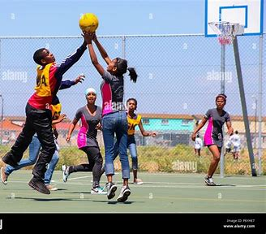
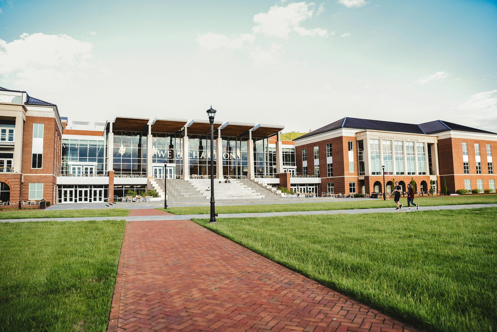
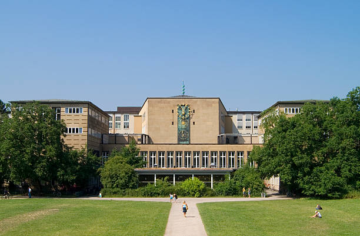

Believe it or not, the site is going to be amazing: The Bweranyangi new dormitory construction is one of the extra-ordinary building
Right after the construction of the new chapel, Bweranyangi Girls SSS is building one of the biggest dormitory the school has ever seen...

Bweranyangi Netball team wins USSSA
The Bweranyangi Netball team as one of the few secondary schools to make it for the national ball games has emerged as the first...

Bweranyangi school Anthem
Bweranyangi Girls SSS is also known for its greatness in music dance and drama (MDD) its Anthem is also...

Construction of the new chapel has been completed
The St.Paul's Cathedral also known as the Bweranyangi Girls Chapel that was started in 2020 has been completed successfully...